在数学中我们用过sin和ln这样的函数，例如sin(π/2)=1，ln1=0等，在C语言中也可以使用这些函数（数学函数sin在C标准库中就是sin函数，而数学函数ln在C标准库中对应的是log函数）。
例3.1 在C语言中使用数学函数
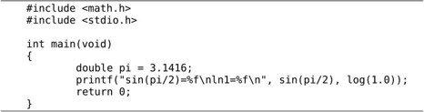
编译运行这个程序，结果如下：
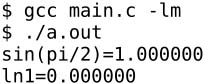
在数学中写一个函数有时候可以省略括号，而C语言要求一定要加上括号，例如log(1.0)。在C语言的术语中，1.0是参数，log是函数（Function），log(1.0)是函数调用（Function Call）。sin(pi/2)和log(1.0)这两个函数调用在我们的printf语句中处于什么位置呢？在上一章讲过，这应该是写表达式的位置，因此函数调用也是一种表达式。log(1.0)这个表达式由操作数log和函数调用运算符()括号组成，函数调用运算符是一种后缀运算符（Postfix Operator），()括号及其中的参数是操作数log的后缀。操作数log是一个函数名（Function Designator），它的类型是一种函数类型（Function Type）。log(1.0)这个表达式的值是取自然对数运算的结果，类型是double型，在C语言中函数调用表达式的值称为函数的返回值（Return Value）。总结一下我们新学的语法规则：
表达式→函数名
表达式→表达式(参数列表)
参数列表→表达式,表达式,...
现在我们可以完全理解printf语句了：原来printf也是一个函数，上例中的printf("sin(pi/2)=%f\nln1=%f\n", sin(pi/2), log(1.0))是带三个参数的函数调用，而函数调用也是一种表达式，因此printf语句也是表达式语句的一种。但是printf感觉不像一个数学函数，为什么呢？因为像log这种函数，我们传进去一个参数会得到一个返回值，我们调用log函数就是为了得到它的返回值，至于printf，通常我们并不关心它的返回值（事实上它也有返回值，表示实际打印的字符数），我们调用printf不是为了得到它的返回值，而是为了利用它所产生的副作用（Side Effect）——打印。C语言的函数可以有Side Effect，这一点是它和数学函数在概念上的根本区别。
Side Effect这个概念也适用于运算符组成的表达式。比如a+b这个表达式也可以看成一个函数调用，把运算符+看作函数，它的两个参数是a和b，返回值是两个参数的和，传入两个参数，得到一个返回值，并没有产生任何Side Effect。而赋值运算符是有Side Effect的，如果把a=b这个表达式看成函数调用，返回值就是所赋的值，既是b的值也是a被赋予的值，但除此之外还产生了Side Effect，就是变量a被改变了，改变计算机存储单元里的数据或者做输入输出操作都算Side Effect。
回想一下我们的学习过程，一开始我们说赋值是一种语句，后来学了表达式，我们说赋值语句是表达式语句的一种；一开始我们说printf是一种语句，现在学了函数，我们又说printf也是表达式语句的一种。随着我们一步步的学习，把原来看似不同类型的语句统一成一种语句了。学习的过程总是这样，初学者一开始接触的很多概念从严格意义上说是错的，但是很容易理解，随着一步步学习，在理解原有概念的基础上不断纠正，不断泛化（Generalize）。比如一年级老师说小数不能减大数，其实这个概念是错的，后来引入了负数就可以减了，后来引入了分数，原来的正数和负数的概念就泛化为整数，上初中学了无理数，原来的整数和分数的概念就泛化为有理数，再上高中学了复数，有理数和无理数的概念就泛化为实数。坦白说，到目前为止本书的很多说法都是不完全正确的，但这是学习理解的必经阶段，到后面的章节都会逐步纠正的。
程序第一行的#号（Pound Sign，Number Sign或Hash Sign）和include表示包含一个头文件（Header File），后面尖括号（Angle Bracket）中就是文件名（这些头文件通常位于/usr/include目录下）。头文件中声明了我们程序中使用的库函数，根据先声明后使用的原则，要使用printf函数必须包含stdio.h，要使用数学函数必须包含math.h，如果什么库函数都不使用就不必包含任何头文件，例如写一个程序int main(void){int a;a=2;return 0;}，不需要包含头文件就可以编译通过，当然这个程序什么也做不了。
使用math.h中声明的库函数还有一点特殊之处，gcc命令行必须加-lm选项，因为数学函数位于libm.so库文件中（这些库文件通常位于/lib目录下），-lm选项告诉编译器，我们程序中用到的数学函数要到这个库文件里找。注意库文件名是libm，但使用-l选项指定库文件时省略lib，只写成-lm。本书用到的大部分库函数（例如printf）位于libc.so库文件中，使用libc.so中的库函数在编译时不需要加-lc选项，当然加了也不算错，因为这个选项是gcc的默认选项。关于头文件和库函数目前理解这么多就可以了，到第19章再详细解释。
提示：C标准库和glibc
C标准主要由两部分组成，一部分描述C的语法，另一部分描述C标准库。C标准库定义了一组标准头文件，每个头文件中包含一些相关的函数、变量、类型声明和宏定义。要在一个平台上支持C语言，不仅要实现C编译器，还要实现C标准库，这样的实现才算符合C标准。不符合C标准的实现也是存在的，例如很多单片机的C语言开发工具中只有C编译器而没有完整的C标准库。
在Linux平台上最广泛使用的C函数库是glibc，其中包括C标准库的实现，也包括本书第三部分介绍的所有系统函数。几乎所有C程序都要调用glibc的库函数，所以glibc是Linux平台C程序运行的基础。glibc提供一组头文件和一组库文件，最基本、最常用的C标准库函数和系统函数在libc.so库文件中，几乎所有C程序的运行都依赖于libc.so，有些做数学计算的C程序除了libc.so之外还依赖于libm.so，还有很多C程序依赖于glibc的其他库文件。以后我说libc时专指libc.so这个库文件，而说glibc时指的是glibc提供的所有库文件。
glibc并不是Linux平台唯一的基础C函数库，也有人在开发别的C函数库，比如适用于嵌入式系统的uClibc。
我们不仅可以调用C标准库提供的函数，也可以定义自己的函数，事实上我们已经这么做了：我们定义了main函数。例如：
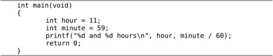
main函数的特殊之处在于执行程序时它自动被操作系统调用，操作系统就认准了main这个名字，除了名字特殊之外，main函数和别的函数没有区别。我们对照着main函数的定义来看语法规则：
函数定义→返回值类型函数名(参数列表)函数体
函数体→{语句列表}
语句列表→语句列表项 语句列表项...
语句列表项→语句
语句列表项→变量声明、类型声明或非定义的函数声明
非定义的函数声明→返回值类型 函数名(参数列表);
我们稍后再详细解释“函数定义”和“非定义的函数声明”的区别。从第7章开始我们才会看到类型声明，所以现在暂不讨论。
给函数命名也要遵循上一章讲过的标识符命名规则。由于我们定义的main函数不带任何参数，参数列表应写成void。函数体可以由若干条语句和声明组成，C89要求所有声明写在所有语句之前（本书的示例代码都遵循这一规定），而C99的新特性允许语句和声明按任意顺序排列，只要每个标识符都遵循先声明后使用的原则就行。main函数的返回值是int型的，return 0;这个语句表示返回值是0，main函数的返回值是返回给操作系统看的，因为main函数是被操作系统调用的，通常程序执行成功就返回0，在执行过程中出错就返回一个非零值。比如我们将main函数中的return语句改为return 4;再执行它，执行结束后可以在Shell中看到它的退出状态（Exit Status）：
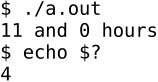
$?是Shell中的一个特殊变量，表示上一条命令的退出状态。关于main函数需要注意两点：
1．参考文献[3]上的main函数定义写成main(){...}的形式，不写返回值类型也不写参数列表，这是Old Style C的风格。Old Style C规定不写返回值类型就表示返回int型，不写参数列表就表示参数类型和个数没有明确指出。这种宽松的规定使编译器无法检查程序中可能存在的Bug，增加了调试难度，不幸的是现在的C标准为了兼容旧的代码仍然保留了这种语法，但读者绝不应该继续使用这种语法。
2．其实操作系统在调用main函数时是传参数的，main函数最标准的形式应该是int main(int argc, char *argv[])，在第22.6节详细介绍。C标准也允许int main(void)这种写法，如果不使用系统传进来的两个参数也可以写成这种形式。但除了这两种形式之外，定义main函数的其他写法都是错误的或不可移植的。
关于返回值和return语句我们将在第5.1节详细讨论，我们先从不带参数也没有返回值的函数开始学习定义和使用函数。
例3.2 最简单的自定义函数
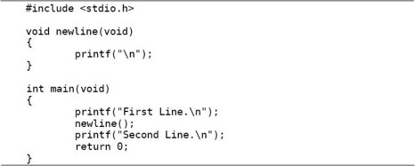
执行结果是：
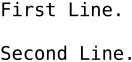
我们定义了一个newline函数给main函数调用，它的作用是打印一个换行，所以执行结果中间多了一个空行。newline函数不仅不带参数，也没有返回值，返回值类型为void表示没有返回值⑥，这说明我们调用这个函数完全是为了利用它的Side Effect。如果我们想要多次插入空行就可以多次调用newline函数：
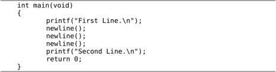
如果我们总需要三个三个地插入空行，我们可以再定义一个threelines函数每次插入三个空行。
例3.3 较简单的自定义函数
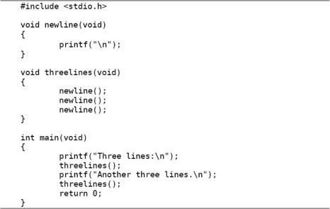
通过这个简单的例子可以体会到：
1．同一个函数可以被多次调用；
2．可以用一个函数调用另一个函数，后者再去调用第三个函数；
3．通过自定义函数可以给一组复杂的操作起一个简单的名字，例如threelines。对于main函数来说，只需要通过threelines这个简单的名字来调用就行了，不必知道打印三个空行具体怎么做，所有的复杂操作都被隐藏在threelines这个名字后面；
4．使用自定义函数可以使代码更简洁，main函数在任何地方想打印三个空行只需调用一个简单的threelines()，而不必每次都写三个printf("\n")。
读代码和读文章不一样，按从上到下从左到右的顺序读代码未必是最好的。比如上面的例子，按源文件的顺序应该是先看newline再看threelines再看main。如果你换一个角度，按代码的执行顺序来读也许会更好：首先执行的是main函数中的语句，在一条printf语句之后调用了threelines，这时再去看threelines的定义，其中又调用了newline，这时再去看newline的定义，newline里面有一条printf语句，执行完成后返回threelines，这里还剩下两次newline调用，效果也都一样，执行完之后返回main，接下来又是一条printf和一条threelines，如图3.1所示。
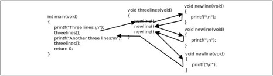
图3.1 函数调用的执行顺序
读代码的过程就是模仿计算机执行程序的过程，我们不仅要记住当前读到了哪一行代码，还要记住现在读的代码是被哪个函数调用的，这段代码返回后应该从上一个函数的什么地方接着往下读。
现在澄清一下函数声明、函数定义、函数原型（Prototype）这几个概念。比如void threelines(void)这一行，声明了一个函数的名字、参数类型和个数、返回值类型，这称为函数原型。在代码中也可以单独写一个函数原型后面加;号结束，而不写函数体，例如：
这种写法只能叫函数声明而不能叫函数定义，上一章讲过，只有带函数体的声明才叫函数定义，因为编译器只有见到函数体才能生成指令，并且分配存储空间来保存这些指令。那么没有函数体的函数声明有什么用呢？它为编译器提供了有用的信息，编译器见到函数原型（不管带不带函数体）就明确了这个函数的名字、参数类型和返回值，之后编译器碰到函数调用代码就知道该生成什么样的指令来实现函数调用了，所以函数原型应该出现在函数调用之前，这也是遵循“先声明后使用”的原则。
在上面的例子中，main调用threelines，threelines再调用newline，要保证每个函数的原型出现在调用之前，就只能按先newline再threelines再main的顺序定义了。如果使用不带函数体的声明，则可以改变函数的定义顺序：
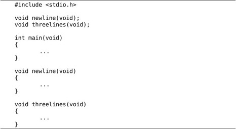
这样仍然遵循了先声明后使用的原则。
由于有Old Style C语法的存在，并非所有函数声明都包含完整的函数原型，例如void threelines();这个声明并没有明确指出参数类型和个数，所以不算函数原型，这个声明提供给编译器的信息只有函数名和返回值类型。如果在这样的声明之后调用函数，编译器不知道参数的类型和个数，就不会做语法检查，所以很容易引入Bug。读者需要了解这个知识点以便维护别人用Old Style C风格写的代码，但绝不应该按这种风格写新的代码。
如果在调用函数之前没有声明会怎么样呢？有的读者也许碰到过这种情况，我可以解释一下，但绝不推荐这种写法。比如按上面的顺序定义这三个函数，但是把开头的两行声明去掉：
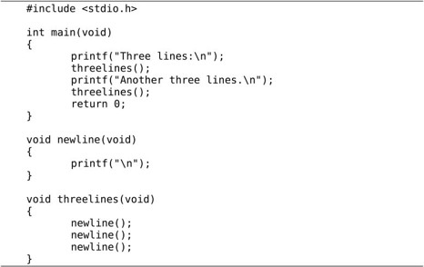
编译时会报警告：
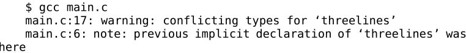
但也能编译通过，运行结果也对。这里涉及的语法规则称为函数的隐式声明（Implicit Declaration）。
⦁ 由于在main函数中调用threelines()之前并没有声明它，编译器只能根据函数调用来猜测它的原型，比如根据调用foo(2.1, 3.3)可以猜测foo函数有两个double型的参数，而我们调用threelines()没有传任何参数，所以编译器认为threelines函数的参数类型是void，另外，编译器认为所有隐式声明的返回值类型都是int，所以threelines函数的隐式声明是int threelines(void);，这样参数和返回值类型都确定下来了，编译器可以根据这些信息为threelines()调用生成相应的指令。
⦁ 然后编译器接着往下看，看到threelines函数的原型是void threelines(void)，与先前建立的隐式声明不一致（返回值类型不同），所以报警告。好在我们也没用到这个函数的返回值，执行结果仍然正确。假如我们在main函数中写int i=threelines();就错了，但编译也能通过，也给出同样的警告信息。
注意区分以下两个概念：
⦁ 如果调用函数时参数列表为空，并且缺少函数原型，则编译器根据隐式声明规则认为参数类型是void；
⦁ 如果声明函数时参数列表为空，则这个声明属于Old Style C语法，不算函数原型，编译器认为参数类型和个数没有明确指出。
下面我们定义一个带参数的函数，我们需要在函数定义中指明参数的个数和每个参数的类型，定义参数就像定义变量一样，需要为每个参数指明类型，参数的命名也要遵循标识符命名规则。
例3.4 带参数的自定义函数
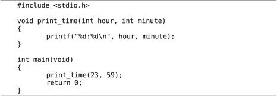
如果写一个非定义的函数声明，可以只写参数类型而不写参数名，例如：
这样的声明仍然包含了函数名、参数类型和个数、返回值类型的完整信息，所以也算函数原型。注意，定义变量时可以把相同类型的变量列在一起，而定义参数却不可以，例如下面这样的定义是错的：
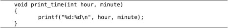
初学者肯定都乐意看到这句话：“变量是这样定义的，参数也是这样定义的，一模一样”，这意味着不用专门去记住参数应该怎么定义了。谁也不愿意看到这句话：“定义变量可以这样写，而定义参数却不可以”。C语言的设计者也不希望自己设计的语法规则里到处都是例外，一个容易被用户接受的设计应该遵循最少例外原则（Rule of Least Surprise）。其实这条规定也不算十分例外，也是可以理解的，我们看参数列表的语法规则：
参数列表→列表项,列表项,...
列表项→类型标识符
参数列表中的,号（Comma）是列表项之间的分隔符，如果允许写void foo(int hour, minute, char c)这样的声明，那就是允许一部分列表项有类型一部分列表项没有类型，还要规定没有类型的列表项和前一列表项的类型相同，那编译器实现起来就复杂了。
另外一个问题是，如果仿照变量声明把参数列表的语法规则改成下面这样不是很好吗？
参数列表→列表项;列表项;...
列表项→类型标识符,标识符,...
按照这样的语法规则，函数声明就可以写成void foo(int hour, minute; char c)，但为什么C语言没有这样规定呢？这也是从Old Style C继承下来的，Old Style C是这样声明参数的：
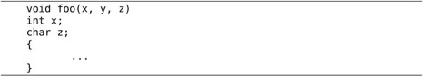
现在的C编译器仍然支持这种语法。上例中不写类型的参数y默认是int型。
学习编程语言不应该死记各种语法规定，如果能够想清楚设计者这么规定的原因（Rationale），不仅有助于记忆，而且会有更多收获。本书在必要的地方会解释一些Rationale，或者启发读者自己去思考，例如上一节在脚注中解释了void关键字的Rationale。参考文献[6]是随C99标准一起发布的，值得参考。
总的来说，C语言的设计是非常优美的，只要理解了少数基本概念和基本原则就可以根据组合规则写出任意复杂的程序，很少有例外的规定说这样组合是不允许的，或者那样类推是错误的。相反，C++的设计就非常复杂，充满了例外，全世界没几个人能把C++的所有规则都牢记于心，因而C++的设计一直饱受争议，这个观点在参考文献[7]中有详细阐述。
在本书中，凡是提醒读者注意的地方都是多少有些Surprise的地方，初学者如果按常理来想很可能要想错，所以需要特别提醒一下。而初学者容易犯的另外一些错误，完全是因为没有掌握好基本概念和基本原理，或者根本无视组合规则而全凭自己主观臆断所致，对这一类问题本书不会做特别的提醒，例如有的初学者看完第2章之后会这样打印π的值：
之所以会犯这种错误，一是不理解Literal的含义，二是自己想当然地把变量名组合到字符串里去，而事实上根本没有这条语法规则。如果连这样的错误都需要在书上专门提醒，就好比提醒小孩吃饭一定要吃到嘴里，不要吃到鼻子里，更不要吃到耳朵里一样。
回到正题。我们调用print_time(23, 59)时，函数中的参数hour就代表23，参数minute就代表59。确切地说，当我们讨论函数中的hour这个参数时，我们所说的“参数”是指形参（Parameter），当我们讨论传一个参数23给函数时，我们所说的“参数”是指实参（Argument），但我习惯都叫参数而不习惯总把形参、实参这两个文绉绉的词挂在嘴边（事实上大多数人都不习惯），读者可以根据上下文判断我说的到底是形参还是实参。记住这条基本原理：形参相当于函数中定义的变量，调用函数传递参数的过程相当于定义形参变量并且用实参的值来初始化。例如这样调用：
相当于在函数print_time中执行了以下代码：
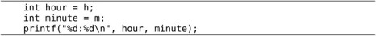
main函数的变量h和print_time函数的参数hour是两个不同的变量，只不过它们的存储空间中都保存了相同的值23，因为变量h的值赋给了参数hour。同理，变量m的值赋给了参数minute。C语言的这种传递参数的方式称为Call by Value。在调用函数时，每个参数都需要得到一个值，函数定义中有几个形参，在调用时就要传几个实参，不能多也不能少，每个参数的类型也必须对应上。
肯定有读者注意到了，为什么我们每次调用printf传的实参个数都不一样呢？因为C语言规定了一种特殊的参数列表格式，用命令man 3 printf可以查看到printf函数的原型：
第一个参数是const char *类型的，后面的...可以代表0个或任意多个参数，这些参数的类型也是不确定的，这称为可变参数（Variable Argument），我们将在第23.6节详细讨论这种格式。总之，每个函数的原型都明确规定了返回值类型以及参数的类型和个数，即使像printf这样规定为“不确定”也是一种明确的规定，调用函数时要严格遵守这些规定，有时候我们把函数叫做接口（Interface），调用函数就是使用这个接口，使用接口的前提是必须和接口保持一致。
提示：Man Page
Man Page是Linux开发最常用的参考手册，由很多页面组成，每个页面描述一个主题，这些页面被组织成若干个Section。FHS（Filesystem Hierarchy Standard）标准规定了Man Page各Section的含义如表3.1所示。
表3.1 Man Page的Section
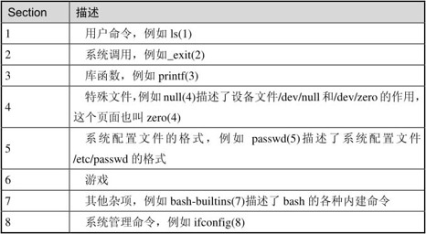
注意区分用户命令和系统管理命令，用户命令通常位于/bin和/usr/bin目录，系统管理命令通常位于/sbin和/usr/sbin目录，一般用户可以执行用户命令，而执行系统管理命令经常需要root权限。系统调用和库函数的区别将在第18.2节说明。
Man Page中有些页面有重名，比如敲man printf命令看到的并不是C函数printf，而是位于第1个Section的命令printf，要查看位于第3个Section的printf函数应该敲man 3 printf，也可以敲man -k printf命令搜索哪些页面的主题包含printf关键字。本书会经常出现类似printf(3)这样的写法，括号中的3表示Man Page的第3个Section，或者表示“我这里想说的是printf库函数而不是printf命令”。
1．定义一个函数increment，它的作用是把传进来的参数加1。例如：

我们在main函数中调用increment增加变量i和j的值，这样能奏效吗？为什么？
2．说出以下代码哪些属于函数声明，哪些属于函数定义，哪些属于函数原型。
⦁ main() {}
⦁ int foo();
⦁ int bar(void) {}
⦁ void baz(int i, int);
我们把函数中定义的变量称为局部变量（Local Variable），由于形参相当于函数中定义的变量，所以形参也是一种局部变量。在这里“局部”有两层含义：
1．一个函数中定义的变量不能被另一个函数使用。例如print_time中的hour和minute在main函数中没有定义，不能使用，同样main函数中的局部变量也不能被print_time函数使用。如果这样定义：
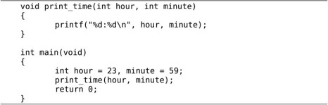
main函数中定义了局部变量hour，print_time函数中也有参数hour，虽然它们名称相同，但仍然是两个不同的变量，代表不同的存储单元。main函数的局部变量minute和print_time函数的参数minute也是如此。
2．每次调用函数时局部变量都表示不同的存储空间。局部变量在每次函数调用时分配存储空间，在每次函数返回时释放存储空间，例如调用print_time(23, 59)时分配hour和minute两个变量的存储空间，在里面分别存上23和59，函数返回时释放它们的存储空间，下次再调用print_time(12, 20)时又分配hour和minute的存储空间，在里面分别存上12和20。
与局部变量的概念相对的是全局变量（Global Variable），全局变量定义在所有的函数体之外，它们在程序开始运行时分配存储空间，在程序结束时释放存储空间，在任何函数中都可以访问全局变量。
例3.5 全局变量
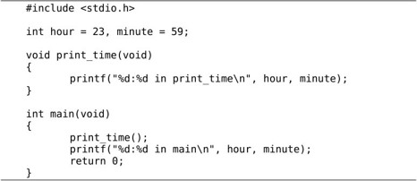
正因为全局变量在任何函数中都可以访问，所以在程序运行过程中全局变量被读写的顺序从源代码中是看不出来的，源代码的书写顺序并不能反映函数的调用顺序。程序出现了Bug往往就是因为在某个不起眼的地方对全局变量的读写顺序不正确，如果代码规模很大，这种错误是很难找到的。而对局部变量的访问不仅局限在一个函数内部，而且局限在一次函数调用之中，从函数的源代码中很容易看出访问的先后顺序是怎样的，所以比较容易找到Bug。因此，虽然全局变量用起来很方便，但一定要慎用，能用函数传参代替的就不要用全局变量。
如果全局变量和局部变量重名了会怎么样呢？如果上面的例子改为：
例3.6 作用域
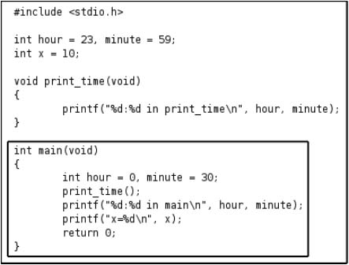
则第一次调用print_time打印的是全局变量的值，第二次直接调用printf打印的则是main函数局部变量的值。在C语言中每个标识符都有特定的作用域，全局变量是定义在所有函数体之外的标识符，它的作用域从定义的位置开始直到源文件结束，而main函数局部变量的作用域仅限于main函数之中。如例3.6中方框所示，设想整个源文件是一张大纸，也就是全局变量的作用域，而main函数是盖在这张大纸上的一张小纸，也就是main函数局部变量的作用域。在小纸上用到标识符hour和minute时应该参考小纸上的定义，因为大纸（全局变量的作用域）被盖住了，如果在小纸上用到某个标识符却没有找到它的定义，那么再去翻看下面的大纸上有没有定义，例如例3.6中的变量x。
到目前为止我们在初始化一个变量时都是用常量做Initializer，其实也可以用表达式做Initializer，但要注意一点：局部变量可以用类型相符的任意表达式来初始化，而全局变量只能用常量表达式（Constant Expression）来初始化。例如，全局变量pi这样初始化是合法的：
但这样初始化是不合法的：
然而局部变量这样初始化却是合法的。
为什么要这样规定呢？因为在程序运行一开始（在还没有执行main函数中的任何语句之前）就要用初始值来初始化全局变量，这样，main函数的第一条语句就可以取全局变量的初始值来做计算。要做到这一点，初始值必须保存在编译生成的可执行文件中，因此要求初始值必须在编译时就计算出来，然而上面第二种Initializer的值必须在程序运行时调用acos函数才能得到，所以不能用来初始化全局变量。请注意区分编译时和运行时这两个概念。
由于编译器负责计算全局变量的初始值，为了简化编译器的实现，C语言从语法上规定全局变量只能用常量表达式来初始化。比如有这样的初始化：
把minute初始化成360-10是合法的，编译器并不会生成一个系统指令来描述360-10的计算过程并把这些指令保存到可执行文件中，而是直接把计算结果350保存到可执行文件中。
然而，把hour初始化成minute / 60是不合法的。虽然在编译时计算出hour的初始值是可能的（先算出minute的初始值再据此算出hour的初始值），但minute / 60不是常量表达式，不符合语法规定，所以编译器直接报错退出，而不去算这个初始值。
如果全局变量在定义时不初始化则初始值是0，如果局部变量在定义时不初始化则初始值是不确定的。所以，局部变量在使用之前一定要先赋值，如果基于一个不确定的值做后续计算肯定会引入Bug。
如何证明“局部变量的存储空间在每次函数调用时分配，在函数返回时释放”？当我们想要确认某些语法规则时，可以查教材，也可以查C99，但最快捷的办法就是编个小程序验证一下。
例3.7 验证局部变量存储空间的分配和释放
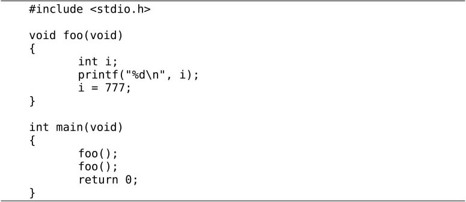
第一次调用foo函数，分配变量i的存储空间，然后打印i的值，由于i未初始化，打印的应该是一个不确定的值，然后把i赋值为777，函数返回，释放i的存储空间。第二次调用foo函数，分配变量i的存储空间，然后打印i的值，由于i未初始化，打印的应该又是一个不确定的值，如果确实如此，就证明了“局部变量的存储空间在每次函数调用时分配，在函数返回时释放”。分析完了，我们运行程序看看是不是像我们分析的这样：
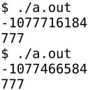
结果出乎意料，第一次调用打印的i值确实是个不确定值，第二次调用打印的i值正是第一次调用末尾赋给i的值777。
如何分析这个结果呢？有一种初学者是这样，原本就没有把这条语法规则记牢，或者对自己的记忆力没信心，看到这个结果就会想：哦那肯定是我记错了，改过来记吧，应该是“函数中的局部变量具有一直存在的固定的存储空间，每次函数调用时使用它，返回时也不释放，再次调用函数时它应该还能保持上次的值”。还有一种初学者是怀疑论者或不可知论者，看到这个结果就会想：教材上明明说“局部变量的存储空间在每次函数调用时分配，在函数返回时释放”，那一定是教材写错了，教材也是人写的，是人写的就难免出错，哦，连C99也这么写的啊，C99也是人写的，也难免出错，或者C99也许没错，但是反正运行结果就是错了，计算机这东西真靠不住，太容易受电磁干扰和宇宙射线影响了，我的程序写得再正确也有可能被干扰得不能正确运行。
这是初学者最常见的两种心态。不从客观事实和逻辑推理出发分析问题的真正原因，而仅凭主观臆断胡乱给问题定性，“说你有罪你就有罪”。先不要胡乱怀疑，我们再做一次实验，在两次foo函数调用之间插一个别的函数调用，结果就大不相同了⑦：
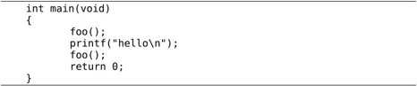
结果是：
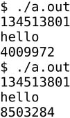
这一回，两次调用foo打印的i值看起来都挺乱，但似乎第一次调用打印的i值总是不变，那它到底是个确定值还是不确定值呢？
关键的一点：我说“未初始化的局部变量的初值是不确定值”，并没有说每次运行程序时这个不确定值不能相同，也没有说这个不确定值不能是上次调用函数时赋给该局部变量的值。在这里“不确定”的准确含义是：每次调用这个函数时该局部变量的初值可能不一样，运行环境不同，函数的调用次序不同，都会影响到局部变量的初值。在运用逻辑推理时一定要注意，不要把必要条件（Necessary Condition）当充分条件（Sufficient Condition），这一点在Debug时尤其重要，看到错误现象不要轻易断定原因是什么，一定要考虑再三，找出它的真正原因。例如，不要看到第二次调用打印777就下结论“函数中的局部变量具有一直存在的固定的存储空间，每次函数调用时使用它，返回时也不释放，再次调用函数时它应该还能保持上次的值”，这个结论倒是能推出777这个结果，但反过来由777这个结果却不能推出这样的结论。所以说777这个结果是该结论的必要条件，但不是充分条件。至于为什么这个不确定值有时刚好是777，有时又不是，等学到第18.1节就能解释这些现象了。
从第3.2节介绍的语法规则可以看出，非定义的函数声明也可以写在局部作用域中，例如：
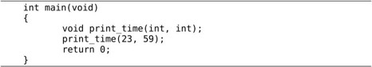
这样声明的标识符print_time具有局部作用域，只在main函数中是有效的函数名，出了main函数就不存在print_time这个标识符了。
写非定义的函数声明时参数可以只写类型而不起名，例如上面代码中的void print_time(int, int);，只要告诉编译器参数类型是什么，编译器就能为print_time(23, 59)函数调用生成正确的指令。另外注意，虽然在一个函数体中可以声明另一个函数，但不能定义另一个函数，C语言不允许嵌套定义函数⑧。